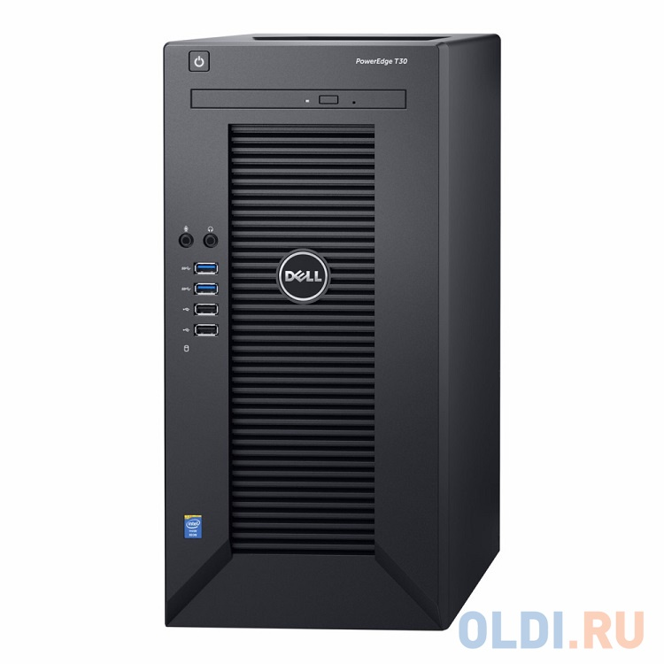

Сервер Dell PowerEdge T30
Описание товара

Сервер Dell PowerEdge T30 E3-1225v5, 8GB DDR4, 2x250GB SSD SATA +1TB SATA 7.2k HDD, Intel RSC, DVDRW, 1GbE, AMT11, Tower, 1Y NBD
Цена
58 890 руб
Характеристики товара
- Тип оборудования Сервер
- Процессор Intel Xeon E3-1225v5 (SkyLake, 3.3 ГГц, 8Мб, S1151)
- Чипсет Intel C236
- Оперативная память 8 ГБ DDR4 2133МГц ECC
- Жесткий диск 2 x 250Гб SSD SATA III
- Видеокарта Matrox G200eW (16 Мб)
- Оптические накопители DVD±RW Super Multi
- Тип корпуса Mini Tower
- Сетевая карта 1 x 10/100/1000 Мбит/с
- Операционная система Не установлена
- Тип упаковки Retail
- Комплект поставки Сервер
- Размеры упаковки 270 x 560 x 470 мм
- Вес в упаковке 12 кг
- Сайт производителя www.dell.com
Подробное описание товара
Dell PowerEdge T30 E3-1225v5 (3.3GHz) 4C, 8GB (1x8GB) 2133MHz DDR4 UDIMM, (2)x 250GB SSD SATA 3D-NAND TLC 2.5" Drive + 1TB SATA 7200 rpm Cabled 3.5" HDD (up to 4x3.5"), Onboard SATA RAID (Intel Rapid Storage Controller 12.X), DVD+/-RW, Intel i219 Single Port 1GbE, AMT 11.0, PS 290W (fixed), Tower, 1Y NBD